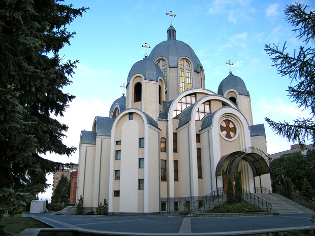
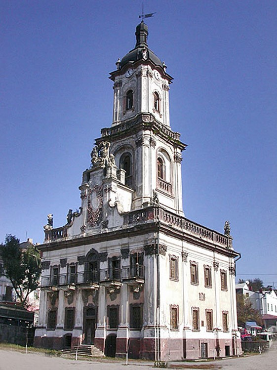
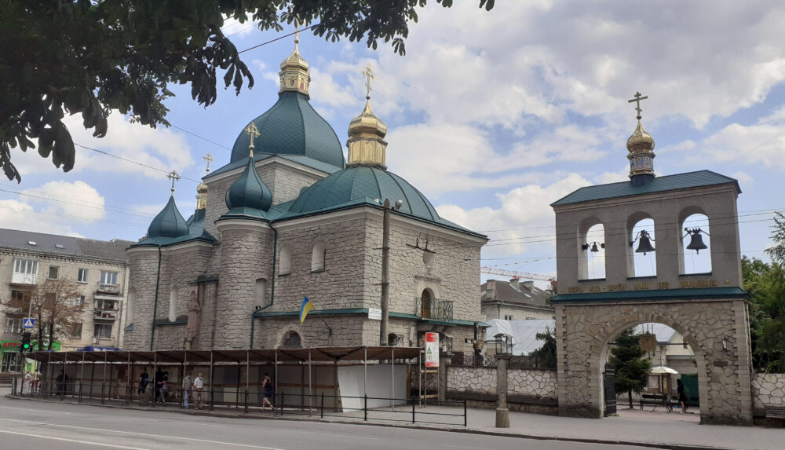

Щоб насолодитися красивими видами, панорамами і архітектурними шедеврами, не потрібно їхати далеко. Всім цим цілком можна насолодитися в тихому і затишному Тернополі.



Домініканський костел
Домініканський костел – культова споруда, зведена в стилі бароко за проектом А. Мощинського. Костел розташований на площі Свободи. Споруду, яку місцеві називають його «Катедра», побудовано на місці давньоруської православної церкви в 1749-1779 роках, зараз відноситься до греко-католицької церкви. Будівля прикрашена двома витонченими баштами, а внутрішнє оздоблення за довгу історію не раз змінювалося. Зараз Домініканський костел і комплекс, що до нього примикає – одне з обов'язкових до відвідування місць в Тернополі. Навпроти споруди розташований невеликий скверик, в якому можна відпочити і помилуватися величним пам'ятником Данилу Галицькому.
Церква Різдва
Христового Церква Різдва Христового – яскравий представник подільської архітектури XVII століття в Тернополі. Ця споруда була побудована під керівництвом майстра Леонтія в 1602-1608 роках. По ходу історії будівля змінювала свої обриси, додавалися нові споруди різного призначення. Зараз споруда належить Українській автокефальній православній церкві. Церква відрізняється хитромудрим розписом, оригінальною кладкою стін з вежами, кованими елементами і куполами, виконаними в зеленій палітрі.